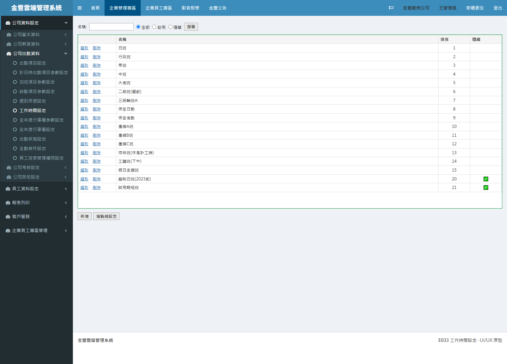
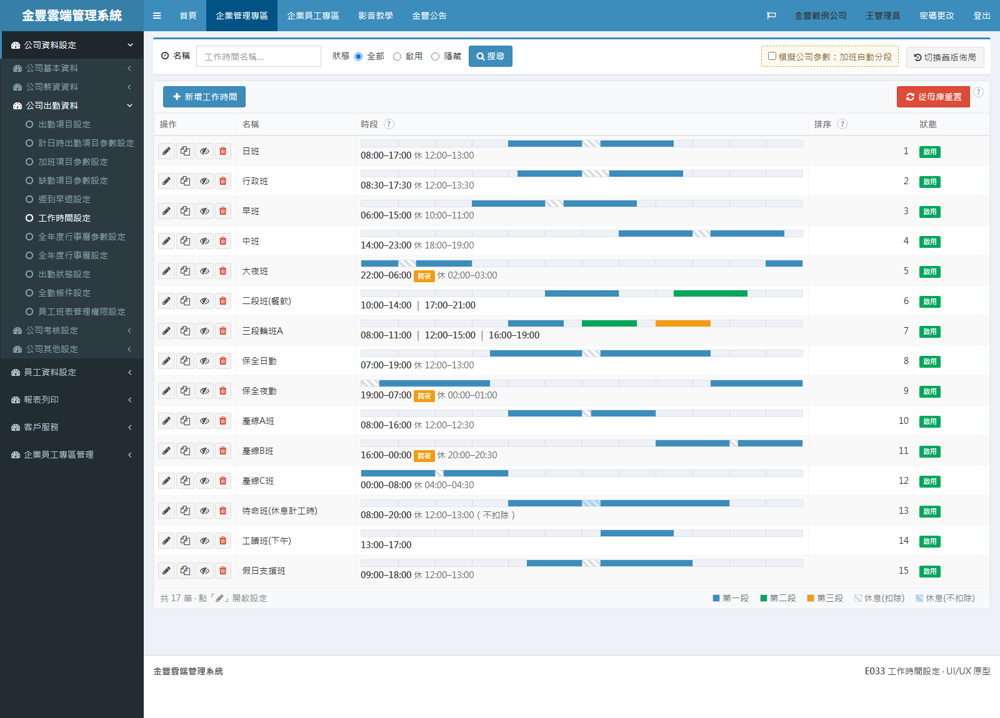
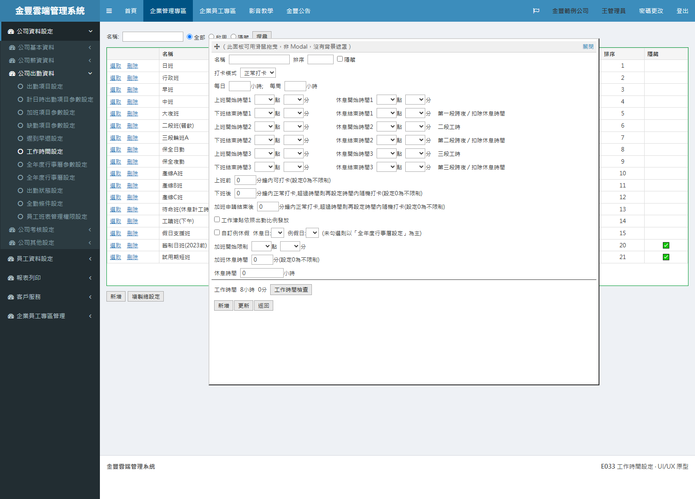
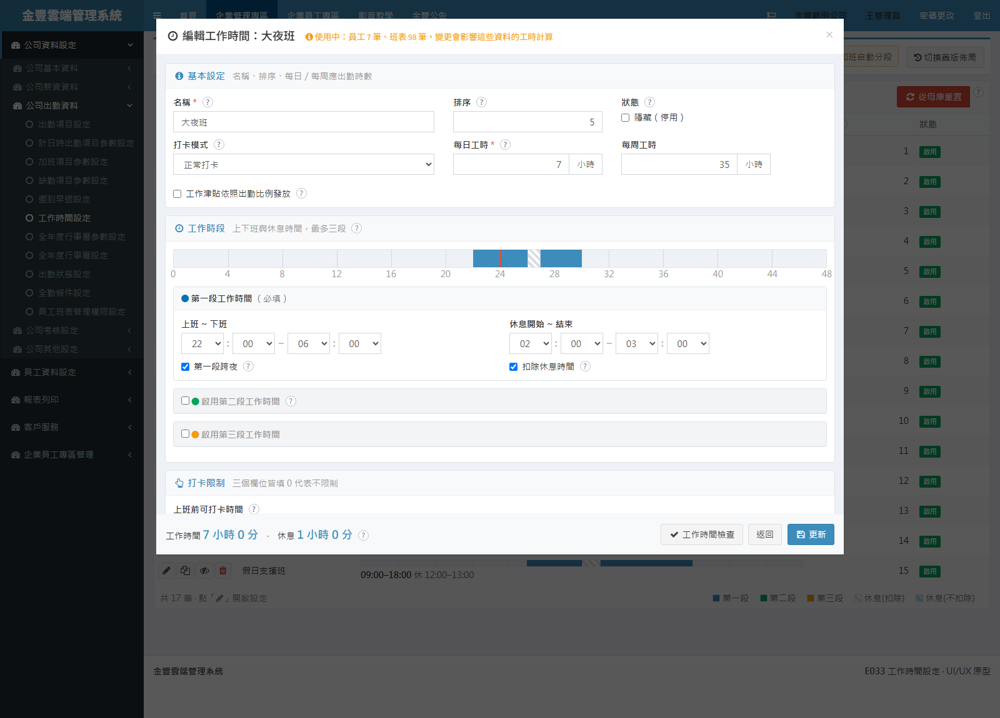

工作時間設定是全公司班別的源頭參數：每一筆設定的名稱會被員工班表與人事資料直接引用， 時段與休息的設定則決定出勤、加班、請假怎麼算。 本次以不動正式系統的方式，先做出可以實際點擊操作的改良原型， 把原本必須逐筆開面板才看得到的內容，攤到清單上一眼可讀。
▶ 開啟互動原型（可實際點擊操作） 原型為靜態展示頁，使用假資料，不會影響正式系統。內建「切換舊版佈局」按鈕，可一鍵切回現行版面現場對照。新增「時段」欄，用時間軸與文字摘要呈現上下班與休息，不必逐筆開面板才知道內容。
約 20 列平鋪的欄位改為基本／工作時段／打卡限制／加班／例休假五張卡，標題吸頂不迷路。
時段一改，時間軸與「工作時間／休息」時數立刻更新，不必按檢查、不必整頁刷新。
「複製總設定」改名為「從母庫重置」並加確認；刪除被擋時明確列出被哪些員工與班表使用。
現行頁面功能齊全，設定項目也很完整，但介面停留在早期版本，實務上出現以下問題：
清單只有「名稱／排序／隱藏」三欄，要知道任何一筆的時段，都得逐筆按「選取」把設定面板開起來看，看完再關掉換下一筆。班別一多，光比對「哪個班是早上六點的」就得開關十幾次。
名稱、工時、三段時段、打卡限制、加班、例休假全部一列一列往下排，靠空白字元對齊，沒有標題也沒有分區，新手不知道從哪裡開始、也不確定有沒有漏填。
上班、下班、休息開始、休息結束各自拆成「時」和「分」兩個下拉；三段工時全開就是 24 個下拉平鋪在面板上，改一個班別的時間要點很多次。
不是標準彈窗，沒有背景遮罩、也不能按 ESC 關閉；面板可以用滑鼠拖，但高度寫死，解析度較低時最下面的「新增／更新／返回」按鈕會被推出畫面。
這兩個勾選是整頁回傳（AutoPostBack）才把欄位打開，刷新後還得靠程式重新把面板叫回來顯示，畫面會閃一下、捲動位置也會跑掉。
這顆按鈕實際上是把本公司的工作時間設定整批清掉，再從金豐母庫的範本重新複製回來。畫面上只是一顆和「新增」長得一樣的灰色按鈕，按下去沒有任何確認；而且被使用中的資料擋下時，訊息還寫成「正在使用中,無法刪除。」——動作是重置，訊息說的是刪除。
刪除時若已有員工或班表在使用，只跳出「此工作時間正在使用中,無法刪除。」沒有說被幾個員工、幾筆班表使用，也沒有告訴使用者：淘汰舊班別其實應該用「隱藏」。
清單的「隱藏」欄，隱藏的顯示 ✅、啟用的是空白。掃視時要反推「沒有勾就是啟用」，而且欄名是「隱藏」不是「狀態」，容易看反。
跨夜要不要勾、「扣除休息時間」勾與不勾差在哪、隱藏之後歷史出勤會不會被影響、名稱其實是員工班表直接存的值（改名等於改掉所有對應）——這些規則都只存在程式與口耳相傳裡，畫面上一個字都沒有。
「工作時間」不會跟著時段自動更新，得按「工作時間檢查」觸發整頁回傳才算一次；改一次時段就得再按一次。

清單只有名稱、排序、隱藏三欄，看不出任何一筆的上下班時間；固定 550px 高的綠框面板，下方大片留白。狀態以 ✅／空白表示。

新增「時段」欄：時間軸配上「08:00–17:00 休 12:00–13:00」文字摘要，跨夜有標籤、二三段用不同顏色；狀態改綠色「啟用」／灰色「隱藏」標籤，表尾附顏色圖例。

約 20 列欄位平鋪、沒有分組，時／分全是下拉；面板是可拖曳的自製浮動視窗，沒有遮罩，蓋在清單上面，尺寸寫死 900×800。

標準彈窗＋五個群組卡片；標題列直接顯示「使用中：員工 7 筆、班表 98 筆」。圖中為跨夜的大夜班，時間軸自動展開成 48 小時、紅線標出日界；頁尾即時顯示工作 7 小時、休息 1 小時。
點任一張圖可開啟全螢幕新舊並排對照。此處的「改良前」是原型內建的現行版面重現（同樣的假資料、仿現行 E033 的版面與自製浮動面板），不是正式系統的實機截圖；簡報時也可以直接在原型上按「切換舊版佈局」現場對照。
畫面依「先查清單 → 需要改才開彈窗」的順序重新分層，查看與編輯分開：
精選 12 項使用者最有感的改良（完整 19 項清單見文末附錄）：
| 項目 | 原本 | 改成 | 好處 |
|---|---|---|---|
| 清單資訊量 | 只有 名稱／排序／隱藏 三欄 | 加上「時段」欄：時間軸＋文字摘要 | 不開面板就知道每個班別幾點上下班、休息多久 |
| 查看動線 | 逐筆按「選取」開 900×800 面板才看得到內容 | 清單直接看，要改才開彈窗 | 查看與編輯分開，比對班別不必開關十幾次面板 |
| 設定面板結構 | 約 20 列欄位平鋪、無分組、靠空白字元對齊 | 五個群組卡片，標題捲動時吸頂 | 找欄位有方向，捲到一半也知道自己在哪一段 |
| 彈窗形式 | 自製浮動面板，寫死 900×800、可拖曳、無遮罩 | 標準彈窗（寬度 92%、上限 1100px） | 有遮罩與 ESC 關閉，小螢幕不再把按鈕推出畫面 |
| 時間輸入 | 時、分各一個下拉，三段全開共 24 個下拉平鋪 | hh:mm 併排，「上班 ~ 下班」「休息開始 ~ 結束」成組 | 視覺上是一個時間區間，不是四個獨立欄位 |
| 二段／三段工時 | 勾選即整頁回傳，刷新後還要把面板重新叫回來 | 前端勾選就地展開卡片 | 不刷頁、不閃爍、不跳位 |
| 時段驗證 | 只能靠腦補：跨夜、休息落在哪裡完全看不出來 | 即時時間軸；跨夜展開 48 小時軸並畫出日界紅線 | 跨夜與休息位置一眼看出來，設錯當場發現 |
| 工時試算 | 要按「工作時間檢查」才算，且是整頁刷新 | 頁尾即時顯示工作／休息時數，檢查結果就地顯示 | 邊改邊看，不必來回按按鈕等頁面重載 |
| 刪除被擋 | 只跳「此工作時間正在使用中,無法刪除。」 | 彈窗列出被員工 N 筆、班表 N 筆使用，並提示可改用「隱藏」 | 知道卡在哪、也知道下一步該怎麼做 |
| 整批覆蓋防呆 | 「複製總設定」是灰按鈕、無確認，看不出會清空整張表 | 改名「從母庫重置」、紅色按鈕、確認彈窗先講明會清空幾筆且無法復原 | 破壞性動作名實相符，不會被當成一般功能誤按 |
| 狀態呈現 | 「隱藏」欄顯示 ✅ 或空白 | 綠色「啟用」／灰色「隱藏」標籤，隱藏列整列淡化 | 掃視即知，不用反推空白的意思 |
| 規則說明 | 跨夜、扣除休息、隱藏的影響等規則只存在程式裡 | 欄位旁「?」點開即為該欄位的實際規則說明 | 設定當下看得到規則，少一次詢問顧問師 |
原型刻意零新依賴，全部沿用系統既有技術棧，將導入成本降到最低：
目前完成的是可操作的靜態原型，尚未修改正式系統。建議依下列階段導入：
以本原型為畫面與行為規格，收斂資訊部門、顧問師與管理層的意見，定版後不再重新發散。
將清單五欄結構、查詢列與分群組的編輯彈窗移植到正式 E033 頁面，先做到「長得一樣」，計算與存檔邏輯不動。
清單時段欄要撈出三段起訖與休息欄位、使用中筆數查詢、刪除與重置的訊息改寫、二三段改前端展開。此階段工作量最大，可再細分批次上線。
以實際情境演練（新增班別 → 掛到員工班表 → 改時段 → 淘汰改隱藏 → 刪除被擋），由人資與顧問師實際操作驗收後切換上線。
| # | 原本 | 改成 | 好處 |
|---|---|---|---|
| 1 | 清單只有 名稱／排序／隱藏 三欄 | 五欄：操作／名稱／時段／排序／狀態 | 清單本身就能回答「這個班幾點上下班」 |
| 2 | 時段資訊完全看不到 | 時間軸（三段配色＋休息斜線）＋文字摘要，表尾附圖例 | 可橫向比較不同班別的時間分布 |
| 3 | 要看內容必須逐筆「選取」開面板 | 清單直接看，需要改才開彈窗 | 查看動線與編輯動線分開 |
| 4 | 操作欄是「選取／刪除」文字連結 | 四顆圖示鈕：編輯／複製為新的一筆／切換隱藏／刪除 | 操作欄變窄，寬度還給資料欄 |
| 5 | 沒有以既有設定為基礎新增的方式 | 每列可「複製為新的一筆」 | 建立相似班別不必整份重打 |
| 6 | 「隱藏」欄顯示 ✅／空白 | 綠「啟用」／灰「隱藏」標籤，隱藏列整列淡化 | 狀態直接可讀，不用反推 |
| 7 | 清單固定 550px 高、僅水平捲軸 | 視窗比例高度＋表頭捲動時固定 | 各種螢幕都完整可用，捲動仍看得到欄位 |
| 8 | 查詢條件與動作按鈕混在同一區 | 查詢條件收成頁面最上方一列 | 條件與動作分層清楚 |
| 9 | 設定面板約 20 列欄位平鋪無分組 | 五個群組卡片（基本／工作時段／打卡限制／加班／例休假） | 找欄位有方向，也看得出還有哪些沒填 |
| 10 | 群組標題不存在，捲動後不知道在哪一段 | 群組標題捲動時吸頂 | 長表單不迷路 |
| 11 | 自製浮動面板：絕對定位、寫死 900×800、無遮罩、可拖曳 | 標準 Bootstrap modal（92% 寬、上限 1100px） | 有遮罩、ESC 關閉、焦點管理 |
| 12 | 時、分各一個下拉，三段全開 24 個下拉平鋪 | hh:mm 併排成組，「上班 ~ 下班」「休息開始 ~ 結束」 | 一個時間區間就是一組欄位 |
| 13 | 勾二段／三段工時整頁回傳，還要重新叫回面板 | 前端勾選就地展開卡片 | 不刷頁、不跳位 |
| 14 | 跨夜與休息只能腦補 | 即時時間軸，跨夜展開 48 小時軸＋日界紅線 | 設定錯誤當場看得出來 |
| 15 | 工時要按「工作時間檢查」才算，且整頁刷新 | 頁尾即時顯示工作／休息時數，檢查結果就地提示 | 邊改邊看，回饋即時 |
| 16 | 不知道這筆有沒有人在用 | 彈窗標題列顯示「使用中：員工 N 筆、班表 N 筆」 | 改動前先知道會影響多少資料 |
| 17 | 刪除被擋只有一句「正在使用中,無法刪除。」 | 列出使用筆數並提示改用「隱藏」淘汰 | 使用者知道下一步怎麼做 |
| 18 | 「複製總設定」灰按鈕、無確認，訊息還寫成「無法刪除」 | 改名「從母庫重置」、紅色按鈕、確認彈窗與說明 | 高風險操作名實相符並加上確認門檻 |
| 19 | 跨夜／扣除休息／隱藏影響／名稱被班表引用等規則無說明 | 欄位旁「?」點開說明，寫的是實際規則 | 規則在使用當下可見，減少詢問與誤設 |